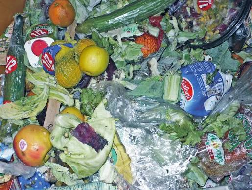
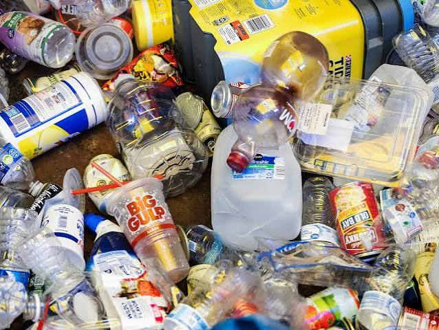
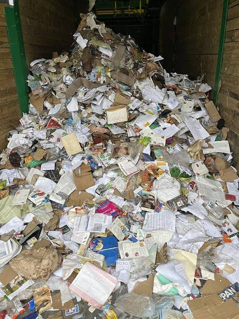
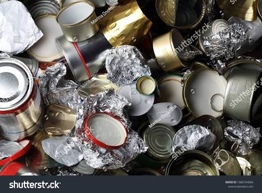

Why should we sort waste?
Waste sorting involves separatin differnt types of waste before disposal. It makes recycling easier, reduces environmental pollution and encourages responsible waste managment.
Types of Waste

Organic Waste
This includes food remains, fruit peels, vegetable waste and gaarden materials.
Managment:Where suitable separate for composting.

Plastic Waste
This includes plastic bottles, containers, packaging materials and bags.
Managment:Keep resuable plastics separate and use appropriate recycling collection points where available.

Paper and cardboard
Examples include nwespapers,cartons,office papers and cardboard boxes.
Managment:Keep dry and separate for recycling where accepted.

Glass and Metal
This includes glass bottles, metal cans and other recyclable metal materials.
Managment:Handle broken glass carefully and separate recyclable items.
Good waste managment practices
- Always use waste designated waste collection points.
- Separate recyclable materials where facilities exist.
- Avoid throwing rubbish into drainage channels.
- Keep watse storage areas clean and covered.
- Do not burn waste in residential or public areas.
- Follow local waste collection arrangements.
Keep drainage channels clear
Drainage channels are important for allowing rain water to flow safely through the community.
Throwing plastic bottles, food waste, polythene bags and other rubbish into drainage chaanels can block the flow of water and contribute to flooding.
How citizens can help?
- Do not throw rubbish in drainage channels
- Use designated waste collection points
- Keep plastic and other waste from drainage chaanels
- Report serious waste accumulation where appropriate
Be part of the Solution
Proper waste managment starts with individual responsibility. Every resident and businesses can contribute to a cleaner Kampala.
Report a Waste Problem